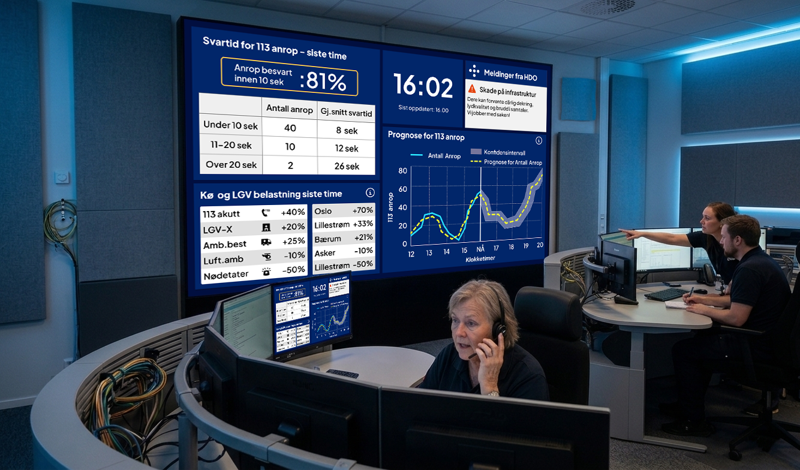

Bachelor Prosjekt
Et sanntidsdashboard for AMK-sentraler som visualiserer anropsvolum, svartider og driftsmeldinger, utviklet i samarbeid med HDO (Helsetjenestens driftsorganisasjon for nødnett). Prosjektet inkluderer brukerintervjuer og prototyping.
IDG3920 Bacheloroppgave BWU, 5. og 6. semester.